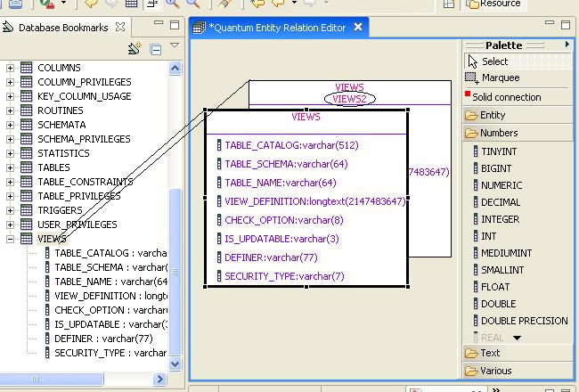
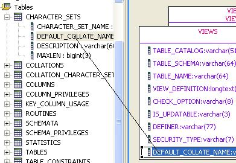
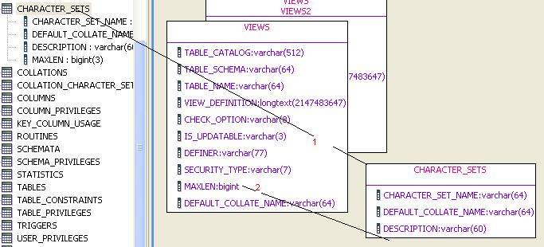
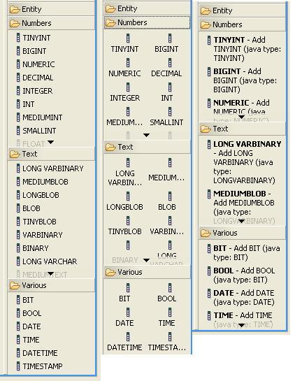
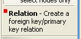
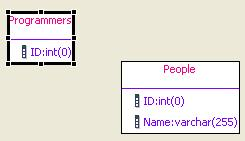
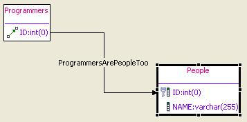
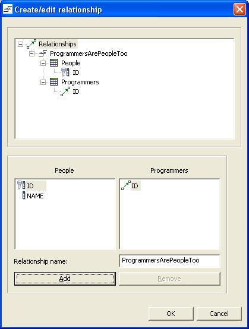
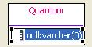
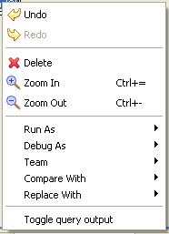

This editor is the Quantum plugin feature for editing entity relationship diagrams. It is configured to handle files with .erd extensions. Depending on what you do with it, the editor produces a .sql script that you can execute and enhance with the SQL Editor or a .ddl script that you can execute to alter tables and relations and create them too. The editor is based on the GEF and has drawn heavily from the example provided by Phil Zoio. The editor has the following features:
Create a resource within eclipse with an .erd extension. This should bring up the editor. It will also add actions to the ActionBar:
From left to right:
This is one of the most powerful features of the editor. After you have created the new file, you can drop tables on the editor and/or drop columns inside already present tables.
Connect to the desired bookmark, navigate to the table of choice, drag it, drop it on the editor:
The image shows that you drag from the bookmark to the upper left corner of the resulting table. The colors are taken from the Preference Store. If the same table is dragged on the editor more than once an alias will be defined for it (views2 in this case). This way you can create queries containing more than one reference to the same table.
You can also drag a column from one table into another. This can be done from the Bookmark or from an existing table in the editor. Note that this will create DDL statements, while most of the other drag and drop operations will create SQL statements.
If you drag a column from one table to another, this is what it looks like:
First you drop a new table on the editor, then you drag one of that table's columns on another table. Alternatively, you could drag the column directly from the Bookmark to the target table. The difference is that this will not alter the source table.
Using drag and drop you should be able to quickly transform one database definition into another. Quantum will use the target database adapter to create the DDL. If the types do not match between the databases... (under development).
The fact that Quantum uses the database adapter for 'DDL rendering' also means that support for these features depend upon the 'completeness' of that adapter.
When working with the palette, drag and drop do work, but point and click work better. If you connect to a bookmark with an ERD editor open, the editor will display the database types in groups in its palette. If you have more than one bookmark open, ... (under development). The groups are relatively simple: Numbers, Text and Various:
This is an example from mySQL. It shows three different ways to display the palette. Right click on the palette and use the layout option to select the display of choice. The Entity palette entry is always present. This allows the addition of tables and columns, without a connected bookmark.
From the palette you can also create relations between tables. For this the relation is used:
Again, you point it to the dependant/foreign/related table and then click it in the source/primary table. The order is important here, because Quantum will automatically assign a primary key constraint to the destination table and a foreign key to the source.
Before the connection is made:
And after the final click:
In fact, this is not the way it looks after the final click, you first get a chance to select the fields participating in the relation and you must enter a name for this relation:
You can use the multiple selection features of the column list boxes to create a primary key that spans more than one column. (Under review). You can also bring up this dialog by double clicking a relation.
If your database supports foreign key relations, this is honoured by Quantum. Whenever you drop a table on the editor, Quantum will check if there are relations defined between the tables already present and the new one. It will even display a foreign key symbol in front of a column when the related primary table is not part of the diagram.
In real production queries you would rename the aliases. This can be done with direct edit. Just click somewhere in the vicinity of the alias name and the direct edit box will become visible. You can enter any name providing it does not contain spaces (and is not the same as the table name).
Real queries do not produce COUNT(*) results most of the time, but will use selected columns. The editor supports this through a context sensitive menu. If you right click a column, you can select: Toggle query output. That column will become part of the target list. You can also select more than one column, and use the command to add the group. Selected columns will have a different background color in their icon:
As can be seen from the previous chapter, the ultimate result of the editor is not only a diagram, but also two kind of scripts: Data Defintion Language and Data Manipulation Language (implemented as SQL-92). The latter script is always produced, the former only when the user has requested it, or the editor has recognized one of the actions in the editor as a data definition action (new table, new column, column deletion).
This kind of script is created when the user saves the diagram. These scripts can be checked for syntactical correctness using the language features of the SQL Editor. You can influence which columns are selected, with the use of the context sensitive popup menu (Toggle query output). The editor starts with a count(*) target list, which will greatly improve performance if your query somehow misses a vital condition.
You can add extra relations to the diagram (those that were not present in the original database).
A where clause is not supported at the moment, allthough there are plans for this. So, you will need to edit the generated script.
Here Quantum relies on the database adapters available for Quantum. The call to create a table is forwarded to the buildCreateTable() function that an adapter may or may not support. There is a default version, but that may produce a script that you cannot execute against your database. The buildCreateTable() function also calls the following functions for which no default implementations exist:
| Function name | Purpose | Supported by ERD editor |
|---|---|---|
| buildPrimaryKey | ALTER the table created just before and define the primary key(s) | Yes |
| buildForeignKeys | ALTER table statement to define relations between tables | Yes |
| buildRemarks | ALTER table statement to define remarks on columns | Not at the moment |
| buildTriggers | ALTER table statement to define the trigger on a table | No |
| buildChecks | ALTER table statement to define checks on columns | Not at the moment |
Other statements are created from the editor directly:
| Function | Statement |
|---|---|
| Add column | ALTER TABLE tablename ADD columnname type; |
| Remove column | ALTER TABLE tablename DROP COLUMN columnName; |
| Rename column | ALTER TABLE tablename ADD COLUMN columnName; UPDATE tablename SET columnName = oldColumnName; ALTER TABLE DROP COLUMN oldColumnName; |
This might need to be taken into the Database Adapter.
The editor allows for in-place editing of the table name, alias name, column name, type and size.
When you edit a column, you can change the name, the type and the size. Because Quantum supports all databases, no checks are made on the name and type (other than that they must be separated by a :). Also no validators are in place on the size at the moment.
Click somewhere in the column's rectangle, and the direct editor will be invoked.
If you are creating new tables and columns, it is simpler to use the palette. Remember to point and click. The editor will supply the type selected in the column definition.
The context menu is shown when you click the right mouse button (or the context invoking key) when hovering over a table or column. This is what it looks like:
Undo/Redo and Zoom In/Zoom Out are the same as those contributed to the Action bar.
Delete will remove a column, a table or a selected group.
The middle portion will depend on your specific eclipse installation.
The bottom item allows you to select whether the specified column(s) are used for output.
If you open the Property view and select a table or a relation in the editor, several properties are listed. These properties can be changed, and the changes will be reflected within the diagram. Changes made in the Property view can be undone and redone, just as if the changes were made from inside the diagram.